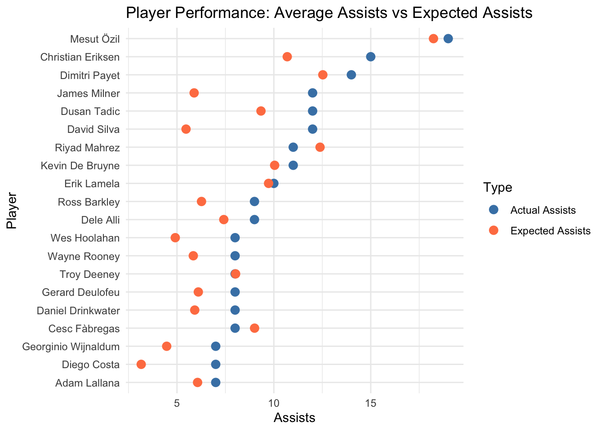

Code
library(ggplot2)
library(dplyr)
library(viridis)
library(tidyr)
library(vcd)
library(reshape2)
player_df = read.csv("combined_match_players_0-500.csv")
player_df = na.omit(player_df)library(ggplot2)
library(dplyr)
library(viridis)
library(tidyr)
library(vcd)
library(reshape2)
player_df = read.csv("combined_match_players_0-500.csv")
player_df = na.omit(player_df)This chart is used to analyse the total playing time for each player in their respective teams. We do this by plotting a horizontal bar chart for the minutes played by per match for each player faceted by team.
team_names <- c("71" = "Aston Villa", "72" = "Everton", "73" = "Bournemouth", "74" = "Southampton", "75" = "Leicester City", "76" = "West Bromwich Albion", "77" = "Sunderland","78" = "Crytsal Palace", "79" = "Norwich City", "80" = "Chelsea", "81" = "West Ham", "82" = "Tottenham Hotspur","83" = "Arsenal", "84" = "Swansea City", "85" = "Stoke City", "86" = "Newcastle United", "87" = "Liverpool","88" = "Manchester City", "89" = "Manchester United", "90" = "Watford", "91" = "Hull City", "92" = "Burnley", "93"="Middlesbrough")
player_df$team_name <- team_names[as.character(player_df$team_id)]
df_time_played_grouped <- player_df |>
group_by(team_name, player) |>
summarise(total_time_played = sum(time_played), .groups = "drop")
ggplot(df_time_played_grouped,
aes(x = total_time_played, y = reorder(player,total_time_played))) +
geom_bar(stat = "identity", fill = "steelblue") +
facet_wrap(~team_name, scales = "free_y") +
labs(
title = "Total Playing Time per Player, Faceted by Team",
x = "Total Time Played (in minutes)",
y = "Players"
) +
theme_minimal() +
theme(strip.text = element_text(size = 12, face = "bold"))
The importance of a player to a team can be assessed based on the amount of playing time they accumulate. Generally, more important players tend to play more minutes compared to those with lesser roles (though this can be influenced by factors such as injuries). Therefore, by examining the bar graph, we can identify which players are crucial to each team. Players positioned at the top of the bar chart for each team are likely to be the most important.
This also allow us to assess which players may be overworked and could potentially benefit from more rest. By analyzing the amount of playing time, we can identify players who are being relied upon heavily, which may indicate a risk of fatigue or injury if not managed properly.
For example, Hector Bellerin stands out as one of Arsenal’s most crucial players, as he has accumulated the highest amount of playing time. This suggests that he is a key part of the team’s strategy and is likely being relied upon for consistent performance. Such insights help in understanding player dynamics and can guide decisions related to player rotation and rest to maintain peak performance throughout the season.
Next we use a cleveland dot plot to analyse the expected performance against the actual performance of the top 20 players with the highest total assists.
average_assists <- player_df %>%
group_by(player) %>%
summarise(
total_xA = sum(xA),
total_assists = sum(assists),
) %>%
arrange(desc(total_assists))
top_20 <- head(average_assists, 20)
#print(top_10_assists)
ggplot(top_20,
aes(y = reorder(player, total_assists))) +
geom_point(aes(x = total_assists, color = "Actual Assists"),
size = 3) +
geom_point(aes(x = total_xA, color = "Expected Assists"),
size = 3) +
labs(
title = "Player Performance: Average Assists vs Expected Assists",
x = "Assists",
y = "Player"
) +
theme_minimal() +
scale_color_manual(values = c("Actual Assists" = "steelblue", "Expected Assists" = "coral"),
name = "Type") +
guides(color = guide_legend(title = "Type"))
Most of the players with the highest assists in all the matches played exceeded their expected assists. Barring Riyah Mahrez and Cesc Fabregas every other player from this top 20 list has made more assists than was expected of them indicating they are reliable teammates. This information can be helpful when planning team strategies or even at the time of analysis of a rival team, you can ascertain which players in the rival team to keep the ball away from or which players to focus the defense on.
If we consider the previous chart displaying the total minutes played by each player, 11 out of the 20 players with the highest assists (i.e. 11 out of the players on the cleveland chart) have been the top five players for their respective teams in terms of minutes played. Indicating they are indeed extremely important for the team, some of these players include Mesut Ozil, Dimitri Payet, James Milner, Adam Lallana etc. However this is not always the case, nearly 50% of these 20 players did not play many minutes on their teams yet they contributed in the short time they were on the field making them critical for game strategies.
An interesting observation is that Troy Deeney exactly as many assists as expected. Talk about a good prediction!
df_match_team_grouped <- player_df %>%
group_by(match_id, team_name, home_away) %>%
summarise(
total_goals = sum(goals, na.rm = TRUE),
total_assists = sum(assists, na.rm = TRUE),
total_xG = sum(xG, na.rm = TRUE),
total_xA = sum(xA, na.rm = TRUE),
total_key_passes = sum(key_passes, na.rm = TRUE),
total_shots = sum(shots, na.rm = TRUE)
)
scatter_plot <- ggplot(df_match_team_grouped, aes(x = total_xG, y = total_goals, color = total_shots)) +
geom_point(alpha = 0.5) +
labs(title = "xG vs Goals", x = "Expected Goals (xG)", y = "Goals", size = "Shots") +
scale_color_viridis(option = "C", direction = -1) +
facet_wrap(~team_name) +
geom_abline(intercept = 0, slope = 1, color = "steelblue", linetype = "dashed", linewidth = 0.5) +
theme_minimal()
print(scatter_plot)
xG, or expected goals, is a crucial metric in football that quantifies the quality of scoring chances a team creates during a match. A high xG indicates that a team has generated several good opportunities to score. Since goals are the ultimate objective in football, every team aims to maximize both their xG and their actual goals. If a team has a high xG but a lower number of goals, it suggests they are not capitalizing on their chances effectively. Conversely, a low xG paired with a high number of goals may indicate efficient finishing.
From the graph, we observe that teams like Arsenal and Stoke City often have points below the y=x line, reflecting fewer goals than their xG—a sign they need to improve their conversion rate. On the other hand, teams like Liverpool frequently exceed the y=x line, demonstrating better utilization of their scoring opportunities.
df_team_grouped <- df_match_team_grouped %>%
group_by(team_name, home_away) %>%
summarise(
total_goals = sum(total_goals, na.rm = TRUE),
total_assists = sum(total_assists, na.rm = TRUE),
total_xG = sum(total_xG, na.rm = TRUE),
total_xA = sum(total_xA, na.rm = TRUE),
total_key_passes = sum(total_key_passes, na.rm = TRUE),
total_shots = sum(total_shots, na.rm = TRUE),
matches=n()
)
df_team_grouped <- df_team_grouped %>%
mutate(
goals_per_match = total_goals / matches,
assists_per_match = total_assists / matches,
xG_per_match = total_xG / matches,
xA_per_match = total_xA / matches,
key_passes_per_match = total_key_passes / matches,
shots_per_match = total_shots / matches
)
df_long <- df_team_grouped %>%
pivot_longer(cols = c(xG_per_match, xA_per_match), names_to = "metric", values_to = "value")
df_long <- df_team_grouped %>%
pivot_longer(cols = c("xG_per_match", "xA_per_match"),
names_to = "metric",
values_to = "value")
ggplot(df_long, aes(x = metric, y = value, fill = home_away)) +
geom_bar(stat = "identity", position = "dodge") +
facet_wrap(~ team_name) +
labs(
title = "Comparison of xG and xA for Teams in Home and Away Matches",
x = "Metrics",
y = "Values",
fill = "Home/Away"
) +
scale_fill_manual(values = c("a" = "lightblue", "h" = "indianred")) + # Adjust colors for home/away
theme_minimal()
The above graph reveals a clear trend where most teams perform better at home than away, particularly in terms of xG (expected goals) per match. All teams, except Bournemouth, Hull City, Leicester City, Sunderland, and Swansea City, show higher xG per match when playing at home compared to away. A similar pattern is observed for xA (expected assists), further emphasizing the advantage of playing in a familiar home stadium. This trend suggests that the home atmosphere plays a significant role in a team’s performance. Teams with a higher xG and xA at home might benefit from the psychological and tactical advantages of playing in their own stadium. These statistics can be valuable for assessing a team’s overall strength, as well as identifying potential weaknesses or inconsistencies in their away form. By analyzing this data, coaches, analysts, and fans can better understand how home and away factors influence team performance throughout the season.
pos_match <- c("AMC" = "MidFielder","AML" = "MidFielder","AMR" = "MidFielder","MC" = "MidFielder","MR" = "MidFielder", "ML" = "MidFielder","DC" = "Defender","DL" = "Defender","DMC" = "Defender","DML" = "Defender","DMR" = "Defender","DR" = "Defender","FW" = "Forward","FWL" = "Forward","FWR" = "Forward","GK" = "Forward")
player_df$pos <- pos_match[as.character(player_df$position)]
df_position_grouped <- player_df |>
group_by(pos) |>
summarise(
total_goals = sum(goals, na.rm = TRUE),
total_xG = sum(xG, na.rm = TRUE),
total_xA = sum(xA, na.rm = TRUE),
total_shots = sum(shots, na.rm = TRUE),
total_assists = sum(assists, na.rm = TRUE),
total_key_passes = sum(key_passes, na.rm = TRUE),
total_time_played = sum(time_played, na.rm=TRUE)
)
df_position_grouped = na.omit(df_position_grouped)
df_position_grouped <- df_position_grouped |>
mutate(
goals_per_match = total_goals*90/total_time_played,
assists_per_match = total_assists*90/total_time_played,
xG_per_match = total_xG*90/total_time_played,
xA_per_match = total_xA*90/total_time_played,
shots_per_match = total_shots*90/total_time_played,
key_passes_per_match = total_key_passes*90/total_time_played
)
heatmap_data <- df_position_grouped |>
select(pos, goals_per_match, assists_per_match, xG_per_match, xA_per_match, shots_per_match, key_passes_per_match)
heatmap_matrix <- melt(heatmap_data, id.vars = "pos")
ggplot(heatmap_matrix, aes(x = variable, y = pos, fill = value)) +
geom_tile() +
scale_fill_gradient(low = "lightblue", high = "blue") +
labs(
title = "Heatmap of Per-Match Metrics by Position",
x = "Metric",
y = "Position",
fill = "Value"
) +
theme_minimal()
From the graph, we can observe that midfielders generally have the highest values for assists_per_match, xA_per_match, shots_per_match, and key_passes_per_match. Forwards tend to have slightly higher goals_per_match and xG_per_match compared to midfielders. Defenders contribute the least across these metrics when compared to midfielders and forwards. An interesting insight is that midfielders have higher shots_per_match than forwards, which is somewhat unexpected.
df_team_match_grouped <- player_df |>
group_by(match_id,team_name) |>
summarise(
total_goals = sum(goals, na.rm = TRUE),
total_xG = sum(xG, na.rm = TRUE),
total_xA = sum(xA, na.rm = TRUE),
total_shots = sum(shots, na.rm = TRUE),
total_assists = sum(assists, na.rm = TRUE),
total_key_passes = sum(key_passes, na.rm = TRUE),
total_time_played = sum(time_played, na.rm=TRUE)
)
df_long_tm <- df_team_match_grouped %>%
pivot_longer(cols = c(total_shots, total_key_passes),
names_to = "metric",
values_to = "value")
ggplot(df_long_tm, aes(x = team_name, y = value, fill = metric)) +
geom_boxplot(position = position_dodge(0.8), color = "black") +
labs(title = "Boxplot of Total Shots and Key Passes by Team",
x = "Team Names",
y = "Value") +
scale_fill_manual(values = c("lightblue", "orange"),
labels = c("Total Shots", "Total Key Passes")) +
theme(axis.text.x = element_text(angle = 45, hjust = 1),
legend.title = element_blank())
From the combined boxplot, it is evident that Manchester City and Tottenham Hotspur consistently exhibit the highest medians for both total shots and total key passes, reflecting their strong offensive gameplay. In contrast, Burnley shows the lowest median for total shots, indicating their struggles in creating scoring opportunities. Additionally, the plot highlights the presence of outliers, showcasing matches where teams performed significantly above or below their typical range. The visualization also provides insights into the lower and upper quartiles, offering a clear understanding of the variability and distribution of performance metrics across different teams.
# Bar Chart: YellowCards by Player
card_summary <- player_df |>
group_by(player) |>
summarize(total_yellow = sum(yellow_card, na.rm = TRUE),
total_red = sum(red_card, na.rm = TRUE)) |>
arrange(desc(total_yellow)) |>
head(50)
mean_yellow <- mean(card_summary$total_yellow)
mean_red <- mean(card_summary$total_red)
card_chart <- ggplot(card_summary, aes(y = reorder(player, (total_yellow)))) +
geom_bar(aes(x = total_yellow), stat = "identity", fill = "lightgoldenrod") +
geom_bar(aes(x = total_red), stat = "identity", position = 'stack', fill = "indianred") +
labs(title = "Disciplinary Records by top 50 Players", y = "Player", x = "Total Cards") +
theme_minimal()
print(card_chart)